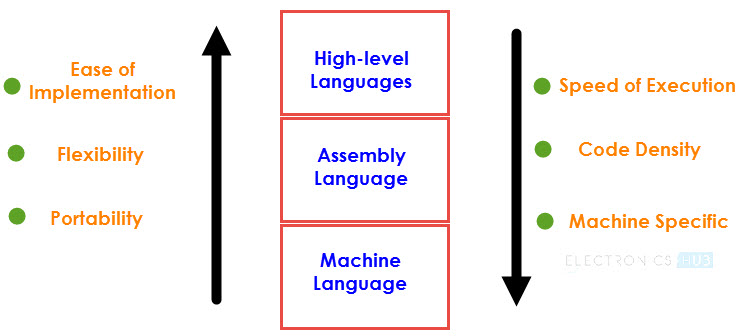
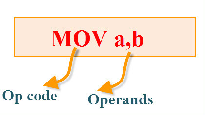
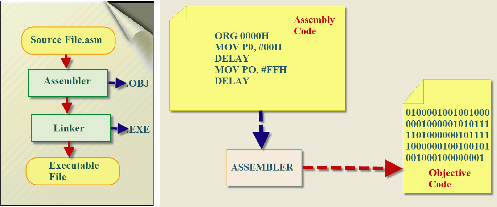
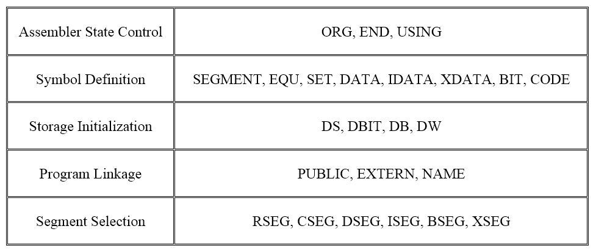
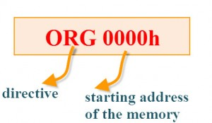
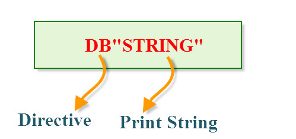

Introduction:
Like any language, Programming Languages have certain words, grammar and rules.
Programming in the sense of Microcontrollers (or any computer) means writing a
sequence of instructions that are executed by the processor in a particular
order to perform a predefined task. Programming also involves debugging and
troubleshooting of instructions and instruction sequence to make sure that
the desired task is performed.
Programming Languages
There are three types or levels of Programming Languages for 8051 Microcontroller.
These levels are based on how closely the statements in the language resemble the
operations or tasks performed by the Microcontroller.
Fig: Types of programming language
Machine language
In Machine language or Machine Code, the instructions are written in binary bit patterns i.e. combination of binary digits 1 and 0,
which are stored as HIGH and LOW Voltage Levels. This is the lowest level of programming languages and is the language that a Microcontroller or Microprocessor actually understands.
Assembly Language
The next level of Programming Language is the Assembly Language. Since Machine
Language or Code involves all the instructions in 1’s and 0’s, it is very difficult
for humans to program using it.
Assembly Language is a pseudo-English representation of the Machine Language.
The 8051 Microcontroller Assembly Language is a combination of English like words
called Mnemonics and Hexadecimal codes.
It is also a low level language and requires extensive understanding of the
architecture of the Microcontroller.
High-level Language
The name High-level language means that you need not worry about the architecture
or other internal details of a microcontroller and they use words and statements
that are easily understood by humans.
Few examples of High-level Languages are BASIC, C Pascal, C++ and Java.
A program called Compiler will convert the Programs written in High-level
languages to Machine Code.
Why Assembly Language?
The name High-level language means that you need not worry about the architecture
or other internal details of a microcontroller and they use words and statements
that are easily understood by humans.
Although High-level languages are easy to work with, the following reasons
point out the advantage of Assembly Language
- The Programs written in Assembly gets executed faster and they occupy less memory.
- With the help of Assembly Language, you can directly exploit all the features of a Microcontroller.
- Using Assembly Language, you can have direct and accurate control of all the Microcontroller’s
resources like I/O Ports, RAM, SFRs, etc.
- Compared to High-level Languages, Assembly Language has less rules and restrictions.
Structure of the 8051 Assembly Language
The Structure or Syntax of the 8051 Microcontroller Assembly Language is discussed here.
Each line or statement of the assembly language program of 8051 Microcontroller consists
of three fields: Label, Instruction and Comments.
Before seeing about these three fields, let us first see an example of how a
typical statement or line in an 8051 Microcontroller Assembly Language looks like.
Fig: 8051 Instruction Structure
TESTLABEL: MOV A, 24H ; THIS IS A SAMPLE COMMENT
In the above statement, the “TESTLABEL” is the name of the Label, “MOV A, 24H”
is the Instruction and the “THIS IS A SAMPLE COMMENT” is a Comment.
NOTE: The brackets for Label and Comments mean that these fields are optional
and may not be used in all statements in a program.
Label :
The Label is programmer chosen name for a Memory Location or a statement in a program. The Label part of the
statement is optional and if present, the Label must be terminated with a Colon (:).
An important point to remember while selecting a name for the Label is
that they should reduce the need for documentation.
Instruction :
The Instruction is the main part of the 8051 Microcontroller Assembly Language
Programming as it is responsible for the task performed by the Microcontroller.
Any Instruction in the Assembly Language consists of two parts: Op-code and Operand(s).
 Fig: Assembly Language inside 2. Fig: Assembly Language inside 2.
The first part of the Instruction is the Op-code, which is short for Operation Code,
specifies the operation to be performed by the Microcontroller. Op-codes in Assembly
Language are called as Mnemonics. Op-codes are in binary format (used in Machine Language)
while the Mnemonic (which are equivalent to Op-codes) are English like statements.
The second part of the instruction is called the Operand(s) and it represents
the Data on which the operation is performed. There are two types of Operands: the Source
Operand and the Destination Operand. The Source Operand is the Input of the operation
and the Destination Operand is where the result is stored.
The assembly language mnemonics are in the form of op-code, such as MOV, ADD,
JMP, and so on, which are used to perform the operations.
Fig: Assembly Language Syntax
Op-codeThe op-code is a single instruction that can be executed by the CPU. Here the op-code is a MOV instruction.
Operands The operands are a single piece of data that can be operated by the op-code. Example, multiplication operation is
performed by the operands that are multiplied by the operand.
Syntax: MUL a,b;
CommentsThe last part of the Structure of 8051 Assembly Language is the Comments. Comments are statements included by the
developer for easier understanding of the code and is used for proper documentation of the Program.
Comments are optional and if used, they must begin with a semicolon (;) or double slash (//) depending on the Assembler.
The following statements will show a few possible ways of using Label, Instruction and Comments
Label without instruction and comment: LABEL:
Line with Label and Instruction: LABEL: MOV A, 22H
Line with Instruction and Comment: MOV A, 22H ; THIS IS A COMMENT
Line with Label and Comment: LABEL: ; THIS IS A COMMENT
Line with only Comment: ; THIS IS A COMMENT
Rules of Assembly Language
- The assembly code must be written in upper case letters
- The labels must be followed by a colon (label:)
- All symbols and labels must begin with a letter
- All comments are typed in lower case
- The last line of the program must be the END directive
The Elements of an Assembly Language Programming:
- Assembler Directives
- Instruction Set
- Addressing Modes
Assembling and Running an 8051 Program
Fig: 8051 Programming.
Here we will discuss about the basic form of an assembly language.
The steps to create, assemble, and run an assembly language program are as follows:
First, we use an editor to type in a program similar to the above program.
Editors like MS-DOS EDIT program that comes with all Microsoft operating systems
can be used to create or edit a program. The Editor must be able to produce an
ASCII file. The "asm" extension for the source file is used by an assembler in the next step.
The "asm" source file contains the program code created in Step 1.
It is fed to an 8051 assembler. The assembler then converts the assembly language
instructions into machine code instructions and produces an .obj file (object file)
and a .lst file (list file). It is also called as a source file, that's why some
assemblers require that this file have the "src" extensions. The "lst" file is
optional. It is very useful to the program because it lists all the opcodes and
addresses as well as errors that the assemblers detected.
Assemblers require a third step called linking. The link program takes
one or more object files and produces an absolute object file with the extension "abs".
Next, the "abs" file is fed to a program called "OH" (object to hex converter),
which creates a file with the extension "hex" that is ready to burn in to the ROM.
The Elements of an Assembly Language Programming
- Assembler Directives
- Instruction Set
- Addressing Modes
8051 Microcontroller Assembly Directives
Assembly Language Directives are not the instructions to the 8051 Microcontroller Assembler
even though they are written in the Mnemonic field of the program. Assembly Language
Directives are actually instructions to the Assembler and directs the Assembler Program
what to do during the process of Assembling.
The Assembly Language Directives do not have any effect on the contents of the
8051 Microcontroller Memory (except DB and DW directives). These Directives are dependent
on the Assembler Program and in case of ASM51 Assembler, the following are the categories
of Directives.
Fig: Assembly Language Directives.
We will now see about few of the important and frequently used Assembly Language Directives.
The most useful directives are 8051 programming, such as:
ORG (Set Origin)
Fig: Assembly Language Directives ORG.
The 8051 Microcontroller Assembly Language Program will start assembling
from the Program Memory Address 0000H. This is also the address from which the 8051
Microcontroller will start executing the code.
In order place the Program and Data anywhere in the Address Space of the
8051 Microcontroller, you can use the ORG Directive.
Example:
ORG 0000H ; Tells the Assembler to assemble the next statement at 0000H
LJMP MAIN ; Code Memory at 0000H. Jump to MAIN.
ORG 000BH ; Tells the Assembler to assemble the next statement at 000BH
MAIN: NOP ; Code Memory at 000BH. MAIN starts here.
Fig: Assembly Language Directives DB
DB (Define Byte)
The DB Directive is used to define a Byte type variable. Using this directive,
you can define data in Decimal, Binary, HEX or ASCII formats. There should be a
suffix of ‘B’ for binary and ‘H’ for HEX. The ASCII Characters are placed in
single quotation marks (like ‘string’).
Example:
ORG 0000H ; Tells the Assembler to assemble the next statement at 0000H
DB 10 ; Define Byte 10 (Decimal) and store at 0000H
DB 30H ; Define Byte 30 (HEX) and store at 0001H
DB ‘STRING’ ; Define String ‘STRING’ and store at 0002H to 0007H
DB 00001111B ; Define Byte 00001111 (Binary) and store at 0008H
DB 1234H ; Define Byte 34 (HEX) and store at 0009H. Only lower byte
is accepted as DB can allocate only a Byte of Memory.
DW (Define Word)
The Define Word (DW) Directive is used to include a 16-bit data in a program.
The functionality of DW is similar to that of DB except that DW generates 16-bit values.
EQU (Equate)
Using the EQU Directive, you can associate a Symbol (or Label) with a Value.
Example:
TMP EQU #30 ; Assigns the value #30 to the name TMP
RED_LED EQU P1.0 ; P1.0 is defined as RED_LED
END
The END Directive is used to stop the assembling process. This should be the last statement in
the program. END Directive cannot have a Label and the statements beyond END will not be
processed by the Assembler.
Example:
ORG 0000H
MOV A, 20H
MOV R0, #30
END
Data Type
The 8051 microcontroller contains a single data type of 8-bits,
and each register is also of 8-bits size. The programmer has to break down
data larger than 8-bits (00 to FFH, or to 255 in decimal) so that it can
be processed by the CPU.
|